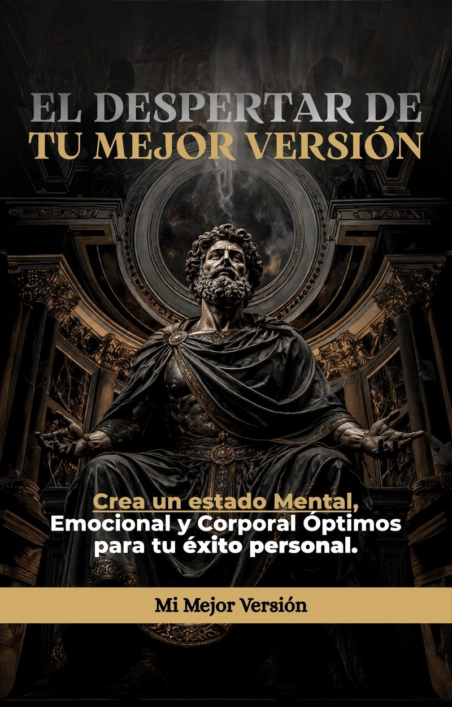
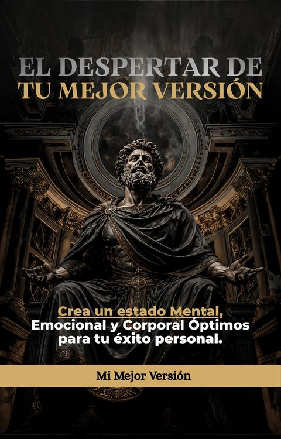

El despertar de tu mejor versión
de Pedro Victoria
Deja de sabotearte. Un método de estoicismo y neurociencia para que lo que haces cada día por fin coincida con lo que valoras.
- 5 capítulos
- 5 herramientas prácticas
- Tapa blanda y Kindle
- Con notas y fuentes
Nace de Mi Mejor Versión, la comunidad de cientos de miles de personas que Pedro creó en YouTube, TikTok y Facebook.

¿Tus días se repiten aunque sabes que eres capaz de más?
Una especie de inercia te regresa a los mismos pensamientos, a las mismas excusas y a la misma rutina. Esa inercia es un sistema de hábitos que construiste sin darte cuenta, y un sistema se puede rediseñar.
- Empiezas con fuerza y tu disciplina se evapora a los pocos días.
- Postergas lo que más te importa y no sabes por qué.
- El celular se come tus horas y tu foco.
- Dependes de lo que opinen los demás para sentirte valioso.
- Te saboteas justo cuando las cosas empiezan a ir bien.
No te falta motivación. Te falta un método.
El método, capítulo por capítulo
Tu mejor versión no es un destino: es la coherencia diaria entre lo que valoras y lo que haces. El libro la construye por partes, apoyado en Marco Aurelio, Séneca y Epicteto, y en estudios de psicología sobre hábitos, fuerza de voluntad y emociones.
- 1
Tu cuerpo
Descanso, movimiento y alimentación como base de la disciplina.
- 2
Tu mente
Salir del piloto automático, instalar hábitos y entrenar el foco.
- 3
Tus emociones
Observar lo que sientes y convertirlo en combustible.
- 4
Tu entorno
Revisar a las personas, los lugares y los hábitos que te rodean, y alejarte de los que te frenan.
- 5
El arquitecto
Despedir a tu viejo yo y diseñar el plano de quien decides ser.
Cinco herramientas para hacer, no solo para leer
Cada una funciona por sí sola. Juntas forman el plano completo de la persona que decidiste ser.
- I
La Brújula del Prisionero
Tus cinco virtudes: el código que guía tus decisiones cuando nadie te mira.
- II
El Contrato
Un juramento firmado que convierte tus palabras en acción.
- III
El Informe de Toxicología
El diagnóstico de las personas, los lugares y los rituales que te sabotean.
- IV
El Plano Maestro
Virtud, mente, cuerpo y entorno en una sola tabla: el diseño de tu nueva identidad.
- V
El Diagnóstico del Arquitecto
Lo que te falta para pasar de quien eres hoy a quien decidiste ser.
Las cinco herramientas están en el libro, listas para usar.
Comprar en AmazonPor qué escribí este libro
En diciembre de 2023, viviendo solo en otro continente, recibí una videollamada de mis padres. Mi hermana se había quitado la vida. Ese mismo día tomé una decisión.
Le demostraría, dondequiera que esté, que siempre existen más caminos por recorrer y que la vida merece ser vivida y honrada.
Así nació Mi Mejor Versión, y este libro es parte de esa promesa. No lo escribí desde la cima, sino desde el suelo, mientras aprendía a levantarme. El estoicismo, los hábitos y la manera de atravesar las emociones me ayudaron a reconstruirme. Ahora son tuyos.
Pedro Victoria
Lee el comienzo
Si este libro ha llegado a tus manos, es probable que conozcas un sentimiento muy humano. Es la frustración de querer avanzar, de saber que eres capaz de más, pero despertar sintiendo que tus días se repiten.
Quizás nunca le has puesto nombre a esa fuerza. Es un malestar, una sombra, la sensación de estar luchando contra ti mismo. Te preguntas por qué te saboteas, por qué tu disciplina se evapora, por qué, a pesar de tus buenas intenciones, acabas repitiendo el mismo guion.
Esa fuerza misteriosa no es un fallo en tu carácter. Es un sistema.
¿Es este libro para ti?
Sí, si…
- Estás harto de repetir la misma historia y quieres escribir una nueva.
- Buscas un método concreto, no frases motivadoras.
- Te interesa el estoicismo y quieres aplicarlo a tu día a día.
- Estás dispuesto a hacer los ejercicios y a enfrentar verdades incómodas.
No, si…
- Buscas un atajo o un cambio sin esfuerzo.
- Quieres leerlo como un turista, sin hacer los ejercicios.
- Esperas que la motivación haga el trabajo por ti.
¿De qué trata el libro?
El despertar de tu mejor versión (2025) es un libro de crecimiento personal de Pedro Victoria. Combina la filosofía estoica y la neurociencia para ayudarte a dejar de sabotearte, en cinco capítulos sobre el cuerpo, la mente, las emociones, el entorno y el diseño de tu nueva identidad, con cinco herramientas prácticas.
¿En qué formatos está?
En tapa blanda y en Kindle, ambos en Amazon.
¿Necesito saber de estoicismo o de neurociencia?
No. Cada idea se explica con historias y ejemplos, y se lleva a la práctica con ejercicios.
¿Sustituye a un psicólogo?
No. Es una herramienta de crecimiento personal, no un tratamiento. Si la tristeza, la ansiedad o el vacío no te dejan vivir, busca ayuda profesional; al pie de esta página tienes líneas de ayuda.

Empieza hoy a escribir una historia nueva
Imagina despertar sabiendo qué vas a hacer hoy y por qué. Ese cambio no empieza con más motivación, sino con un sistema distinto.
Disponible en Amazon, en tapa blanda y Kindle. El pago y el envío los gestiona Amazon.
Comprar en Amazon